2.Marco teórico
Este obra está bajo una licencia de Creative Commons Reconocimiento-NoComercial-CompartirIgual 4.0 Internacional.
Para saber más, visita la sección Licencia
2.1. Antecedentes de la Investigación
Desde diversos foros y disciplinas (didáctica, sociología de la comunicación, psicología, filosofía, etc.) surgen actualmente voces que proponen nuevas bases epistemológicas para la construcción del conocimiento científico en educación. El renovado interés por los medios de enseñanza, con el desarrollo de nuevas tecnologías y su incorporación en el sistema educativo, ha dado lugar a la realización de investigaciones que abordan la relación entre diversos medios (televisión, vídeo, internet, sistemas multimedia) y contextos socioculturales, especialmente focalizados sobre los procesos de mediación introducidos por éstos en el desarrollo cognitivo.
El marco conceptual desarrollado por el enfoque sociocultural propone sugerentes retos a la educación en relación con el diseño de actividades y materiales educativos. Propiciar el dominio de los instrumentos culturales vinculado a unos contextos a través de la privilegiarían de éstos por parte de los sujetos y promover acciones de extrapolación de conocimientos de unos contextos a otros nuevos se proponen como metas educativas específicas desde esta perspectiva. Algunos trabajos fundamentados en los últimos avances en la teoría de la actividad proponen estrategias específicas en el diseño de materiales y actividades educativas. (Reigeluth, 1999).
En éstos, se aportan procesos y pautas concretas en la elaboración de materiales didácticos apoyados en distintos medios; a través de las acciones que realizan los alumnos en el marco de contextos de actividad diseñados con fines educativos y con variedad de medios e instrumentos para su realización pretende que éstos alcancen un alto dominio de los diversos lenguajes implícitos en las elaboraciones culturales para que pueda construir y proyectar su identidad a través de ellos. (REBOLLO CATALÁN, M.ª ÁNGELES. La 26 investigación educativa sobre nuevas tecnologías: una aproximación sociocultural. Enseñanza, 20, 2002,113-126).
Las generaciones actuales, están creciendo en un contexto marcado por las nuevas tecnologías, cuya influencia se puede observar en las conductas y expresiones diarias del alumnado. Sin embargo, el aula puede no estar adaptada para esta realidad social. (Guerra, 2013-2014)
Estas nuevas tecnologías de la información y la comunicación son las llamadas TIC, sin embargo, actualmente, existen numerosas adaptaciones de estas tecnologías para llegar a todos los colectivos y conseguir los mejores resultados en el ámbito educativo, surgiendo de esta forma, las TAC y las TAD.
Las TAC son las tecnologías para el aprendizaje y el conocimiento y constituyen el conjunto de “técnicas que posibilitarán el aprendizaje en red, de manera colaborativa con el apoyo y gracias a la ayuda de las TIC” (Muñoz 2008, p.6). Mientras que las TAD son las tecnologías de apoyo a la diversidad, y se definen como “cualquier artículo, equipo global o parcial, o cualquier sistema adquirido comercialmente o adaptado a una persona que se usa para aumenta o mejorar capacidades funcionales de individuos con discapacidades o modificar o instaurar conductas” (Cebrián y gallego, 2011, p.46).
Por otro lado, los sistemas open source y open hardware son una opción económica, eficiente y flexible para implementar y desarrollar tecnología en el aula. El uso de estas herramientas permite la construcción de sistemas complejos haciendo uso de software y hardware diseñado por terceros, ofreciendo una gran flexibilidad gracias a la disponibilidad del código y circuitos esquemáticos; de esta manera se logra ajustar el comportamiento de las aplicaciones obteniendo algunos beneficios como: reducción de tiempo de desarrollo, expansión de aplicaciones, modularidad y corrección de problemas de una manera práctica. Adicionalmente, estos sistemas son de extrema utilidad para el 27 caso en el cual sea necesario reducir costos, muy común en ambientes educativos de nuestra región que cuentan con recursos muy limitados. La calidad de las herramientas para el desarrollo de las aplicaciones es muy buena y no tienen nada que envidiar a equivalentes comerciales. Con estas aplicaciones se pretende también involucrar a los estudiantes en proyectos a nivel de trabajos de fin de materia y/o proyectos de grado en la cultura del open source tanto de software como de Hardware. (Arango, Navarro, & Bestier Padilla, 2014)
La presencia del ordenador en todos los ámbitos de nuestra sociedad hace inevitable su uso en entornos educativos y, por tanto, exige una profunda reflexión para descubrir sus mejores potencialidades educativas y su adaptación a la actividad educativa cotidiana. La implantación de las nuevas tecnologías en el mundo educativo abre un horizonte de posibilidades y recursos que pueden y deben enriquecer los procesos de enseñanza y de aprendizaje.
En España y en países de nuestro entorno se han puesto en marcha durante las dos últimas décadas diferentes planes dirigidos a introducir las nuevas tecnologías en los centros escolares.
Las autoridades educativas españolas crearon el Proyecto Atenea en 1985. El desarrollo de este proyecto experimental tenía como finalidad la incorporación gradual y sistemática de equipos y programas informáticos dentro de un contexto de innovación educativa. La introducción del ordenador como proyecto de innovación en un centro educativo origina cambios en las diferentes estructuras, en la organización de los medios, en la formación del profesorado, en su colaboración en proyectos comunes, etc. Cambios que conllevan una serie de implicaciones que inciden también en el propio alumnado: nuevos medios, nuevas metodologías, nuevas relaciones con el profesorado.
El objeto último de esta investigación es la búsqueda sistemática de la información que permita conocer cuál ha sido la realidad de la incorporación de los medios informáticos a la enseñanza, y de lo que desde dentro de la comunidad educativa es considerado como óptimo y necesario para una buena integración de esos medios. (Fernández Prieto)
Pérez (2012) sostiene que el papel de la escuela y el currículum es el de ofrecer a los niños y niños oportunidades de experiencias para que se configuren como sujetos activos de su 28 proceso de aprendizaje y autores de su propia vida, de manera que investiguen, comuniquen e interactúen activamente en comunidad, formando parte de un grupo o colectivo determinado.
De hecho, atendiendo al sistema legislativo en esta etapa, son numerosos los decretos y leyes que se mencionan al respecto de la inserción de las nuevas tecnologías en los centros educativos infantiles, estableciendo las TIC como un recurso fundamental para el desarrollo de las enseñanzas mínimas, constituyendo de esta forma una competencia a desarrollar en el alumnado infantil (REAL DECRETO 1630/2006, de 29 de diciembre, ORDEN de 5-8-2008, LEY ORGÁNICA 8/2013)
Los usos de las NNTT tienen gran influencia en edades juveniles. Esto se puede ver reflejado en la investigación elaborada por Arena (2009) en la que analiza el uso de las nuevas tecnologías en centro de Primaria y Secundaria, excluyendo el colectivo de educación infantil.
Por otro lado, podemos mencionar proyectos públicos sin ánimo de lucro como CODE.org, que intenta llamar la atención de los gobiernos para que vean la necesidad de incorporar la programación dentro de los currículos de la educación. Esta iniciativa cuenta con el apoyo de Bill Gates, Microsoft, Apple y Mark Zuckerberg entre otros.
Como podemos ver, son múltiples las citas a tesis de investigación y TFG que tratan sobre el uso de herramientas open source o TIC en el ámbito educativo. Cabe decir que las mencionadas investigaciones siempre han dado resultados positivos acerca de los usos de estas tecnologías e intentan demostrar que este uso es favorable en el proceso educativo, como es el caso de la investigación llevada a cabo en 2006 Wighting, y refutada posteriormente en 2014 por Wilson, que ponía de manifiesto el aprendizaje significativo que se produce con más efecto en aquellas aulas en las que se emplean las metodologías digitales, frente a las tradicionales.
2.2. Bases Teóricas
2.2.1. Herramientas web 2.0
Las herramientas web 2.0 son una de las herramientas de innovación educativa que se usan en las TIC, ampliándose con el uso de otras.
En la actualidad muchas plataformas educativas 2.0 están dando lugar al desarrollo de una cultura interactiva en el ámbito de la educación.
Con la aparición de la web 2.0 se está produciendo una nueva interacción que da como resultado, y al mismo tiempo utiliza, otros sistemas simbólicos diferentes a los que venían siendo comunes hasta ahora; la interacción con una tecnología, y más concretamente con sus sistemas simbólicos, transforma nuestra forma de entender e interaccionar con el medio ambiente, y tal relación repercute en el fortalecimiento o debilidad de nuestras habilidades cognitivas o meta-cognitivas concretas (Cabero, 2009)
Cuando hablamos del medio, nos podemos referir al entorno de trabajo colaborativo, que gracias a las redes sociales y las aplicaciones 2.0 ha cambiado el enfoque tradicionalista del aprendizaje, pasando a un enfoque de trabajo por proyectos o en grupo basado en comunidades y haciendo uso de plataformas colaborativas en las que se comparte el material creado en distintos soportes.
Es por esto por lo que el trabajo en las aulas se puede redefinir, en especial en la educación secundaria, dando lugar a una interacción entre el profesor y el alumno, dejando de lado la unidireccionalidad profesor-alumno y favoreciendo las estrategias de resolución de tareas.
2.2.1.1. Herramientas basadas en el aprendizaje colaborativo
Hablamos de aprendizaje colaborativo (Johnson y Johnson, 1998) cuando los alumnos y los profesores trabajan juntos para crear saber, el conocimiento se produce socialmente por consenso entre compañeros y se construye “algo” poniéndose de acuerdo. El aprendizaje colaborativo intenta evitar la verticalidad y unidireccionalidad, dando lugar a una división de tareas que fomenta la autonomía de los alumnos.
2.2.1.2. Aprendizaje en grupo
Cuando realizamos solo un aprendizaje en grupo, no suele haber colaboración en el trabajo, ya que solo haríamos una agrupación de distintas partes y una división de roles.
2.2.1.3. Aprendizaje cooperativo
El aprendizaje cooperativo es el uso didáctico de equipos reducidos de alumnos para aprovechar al máximo la interacción entre ellos con el fin de maximizar el aprendizaje de todos (Johnson, Johnson y Holubec, 1999). Los miembros de un equipo de aprendizaje cooperativo tienen una doble responsabilidad: aprender ellos lo que el profesor les enseña y contribuir a que lo aprendan también sus compañeros de equipo. Y los equipos de esta índole persiguen una doble finalidad: aprender los contenidos escolares y aprender a trabajar en equipo, como un contenido escolar más. Es decir, cooperar para aprender y aprender a cooperar (Pujolás, 2009).
2.2.1.4. Prácticas y competencias colaborativas mediante el uso de la web 2.0
Las últimas investigaciones sobre el modelo de implantación de las TIC en el sistema educativo andaluz realizan un diagnóstico realista y ajustado, en cuanto al uso que el profesorado hace de las TIC (Sola y Murillo, coord., 2011):
Primeramente, se alude a la falta de continuidad y de estabilidad de las prácticas didácticas relacionadas con las nuevas tecnologías, por lo que su uso no es continuado, ni es un plan colectivo en los centros.
Según Crook y Harrison (2008, citados en Cabero 2009, página 11), los investigadores han identificado cuatro grandes modelos de usos potencialmente beneficiosos para la enseñanza y el aprendizaje de la web 2.0:
- Estimulando nuevos modelos de investigación
- Cautivando actividades de aprendizaje colaborativo
- Enfatizando nuevas alfabetizaciones
- Y publicando contenidos en línea
Por otro lado, podemos mencionar a Julio Cabero (2009), quien afirma que la escuela 2.0 potencia un modelo de producción colaborativa del conocimiento mediante el intercambio de información, desarrollando así el proceso educativo.
2.2.1.4.1. Caso Maenoba Scientia
El proyecto Maenoba Scientia está centrado en la edición on-line de la Revista de Ciencia e Ingeniería Maenoba Scientia, coordinado por profesores y profesoras que imparten bachillerato en el IES Almenara(Vélez-Málaga).
La edición es llevada a cabo por alumnos y alumnas y, para ella utilizan herramientas de entorno 2.0 y métodos colaborativos a la hora de investigar sobre temas científicos y tecnológicos, compartiendo la información en la plataforma del centro (Emprendewiki).
El hecho de que una publicación escolar como La Revista de Ciencia e Ingeniería Maenoba Scientia esté disponible on-line en el espacio wiki del propio centro (Emprendewiki), le da un carácter ubicuo tanto a la propia publicación como a sus contenidos14 y a los procesos llevados a cabo para generarlos por parte de los alumnos y alumnas de Bachillerato, desde el trabajo llevado a cabo en diferentes asignaturas en los espacios–clase, como los desarrollados en casa porque el tiempo en el centro educativo no da para más, o las conexiones no permiten utilizar ciertas aplicaciones web 2.0 on-line. (Cortés)
Cabe decir, que la plataforma Emprendewiki1 ha sido uno de los cinco proyectos finalistas de los premios Educared (2011) y fue galardonada con el 4 premio a la mejor solución tecnológica desarrollada por un centro educativo en la ITWorldEdu 2009 de Barcelona, concedido por la puesta en marcha de la plataforma, herramienta que permitía a todos los departamentos colaborar en la elaboración y publicación de materiales, ya sean elaborados por profesores, o alumnos como es el caso de la revista Maenoba Scientia.
Tal y como menciona Cortés (2013), tanto la plataforma Emprendewiki como la revista Maenoba Scientia fomentan entre otras coas el trabajo colaborativo entre alumnos, el espíritu emprendedor y el carácter divulgador.
En nuestro caso, concretamente hemos elaborado un pequeño blog2, que nos servirá como portafolios del proyecto y como wiki en la que divulgaremos conocimientos acerca de nuestro proyecto y de las tecnologías usadas en el mismo.
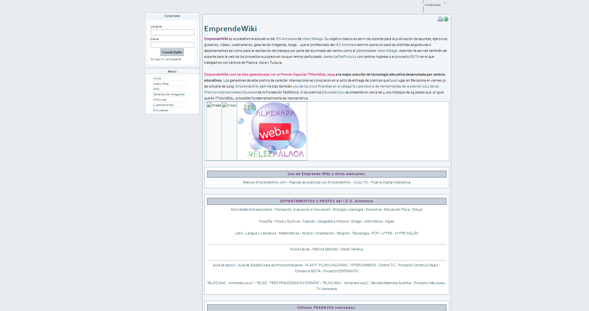2.2.2. Proyecto open-source
Open source es un término que se originó en el contexto del desarrollo de software para referirse a la tecnología cuyo código es “abierto”, es decir, que cualquier persona puede usarla, modificarla o mejorarla. En un esfuerzo de colaboración desinteresado, donde programadores y diseñadores van mejorando el código de un programa y comparten los cambios con todo el mundo. Esta filosofía surgió a principios de los años noventa en la comunidad tecnológica como respuesta al software patentado por las empresas.
En Finlandia, Linus Torvalds, un estudiante de ciencias computacionales insatisfecho con el sistema operativo “Minix “, implementaba las primeras versiones del núcleo de Linux: muy pronto equipos enteros completaron el sistema operativo hasta hacerlo estable. Sin embargo, cuando hablamos de open source también nos referimos a un conjunto de valores, lo que algunos llaman el “estilo open source”: todos los proyectos, productos o iniciativas que apuestan por el intercambio abierto, la participación colaborativa, la transparencia y el desarrollo comunitario pueden considerarse open source.
Un claro ejemplo de open source sería “Open Office”.
2.2.2.1. Open software
Si bien existen diversas definiciones para open software, básicamente significa que los usuarios tienen la libertad para ejecutar, copiar, distribuir, estudiar, modificar y mejorar el software.
Algunos autores lo denominan «software libre» (no significa software gratis), el cual tiene un contexto de libertad no de precio, de hecho, existe la posibilidad de cobrar por el desarrollo y por la distribución de Software libre.
En la práctica, "Software libre" y "código abierto" significan y expresan, cosas diferentes. Hay quien denomina Software libre al "código abierto" o "software de fuentes abiertas" ("open source" software).
2.2.2.2. Open hardware
El open hardware emplea la misma filosofía que el open software para aplicarlas en su campo.
Es una propuesta casi tan antigua como la del open software, sin embargo, su empleo no es tan directo. Compartir diseños hardware es más complicado. Richard Stallman afirma que las ideas del software libre se pueden aplicar a los ficheros necesarios para su diseño y especificación (esquemas, PCB, etc.), pero no al circuito físico en sí.
2.2.2.3. Hardware estático
Como bien se conoce, los componentes tradicionales de un diseño de hardware son: el circuito esquemático, el circuito impreso, la información de diseño y la documentación asociada. El producto final de los archivos de diseño da como resultado un circuito de existencia física (se puede tocar). Ésta y otras diferencias con el software hacen que surjan una serie de problemas si se desean utilizar los mismos conceptos y licencias que para el software.
En este documento, nos vamos a centrar en la plataforma que usaremos en nuestro proyecto de investigación, es decir, Arduino.
2.2.2.4. Impresión 3D
La impresión 3D es la técnica que usa una impresora 3D para realizar réplicas de diseños en 3D, creando así piezas o maquetas volumétricas a partir de un diseño realizado a ordenador. El funcionamiento en su simplicidad consiste en un extrusor que distribuye pequeñas dosis del material usado en un plano, consiguiendo con la suma de planos la pieza deseada. Esto es conocido como fabricación por adición, en concreto como Modelado por Deposición Fundida (MDF) y, cabe decir que la impresión 3D es la tecnología aditiva más sencilla y fácil de usar.
Sus aplicaciones son muy amplias y abarca campos tan diversos como el de la educación, la alimentación, la arqueología, el arte y la medicina, aunque debido al movimiento maker, tiene gran repercusión su uso doméstico. En la educación ayuda a los alumnos a entender y poder visualizar conceptos abstractos, pudiendo usarse en ciencias sociales y naturales, matemáticas, arte historia y por supuesto tecnología, revolucionando así la actividad pedagógica.
En el campo de la arquitectura y el prototipado, permite abaratar costes de fabricación de maquetas y prototipos. Y en los campos de la arqueología, paleontología y las ciencias forenses, permite reconstruir huesos y partes de cuerpos o hacer réplicas de antigüedades.
El campo de las artes ha sufrido una revolución con el uso e incorporación de las nuevas tecnologías. Con la impresión en 3D, se ha incorporado una nueva metodología de creación.
Las aplicaciones en el ámbito de la medicina son numerosas. Se centra en la creación de órganos artificiales a través de un modelo digital. También en cuanto a la formación de médicos tiene sus múltiples utilidades, ya que permite obtener replicas a escala de cualquier parte de cuerpo, dando también buenos resultados de cara a las prácticas médicas.
La ingeniería de tejidos es una de las técnicas más novedosas que actualmente está en desarrollo. Consiste en la impresión de tejidos humanos intercalando capas que imitan 36 la composición de las capas de los vasos sanguíneos. De cara al futuro, se pretende que los órganos sean funcionales, cosa que actualmente no se ha logrado.
En el uso doméstico la incorporación de la impresora 3D ha sido gracias al movimiento DIY, el proyecto RepRap que ha permitido desarrollar una impresora de código abierto y el abaratamiento de los nuevos kits, dando lugar a comunidades de impresión 3D y a la liberación de diseños con licencias CC.
2.2.2.5. Arduino
Arduino es una placa con un microcontrolador que facilita el uso de la electrónica en proyectos multidisciplinares. Pero ¿cómo funciona? Podemos comparar esta placa con un ordenador. El ordenador tiene un procesador, al cual, le conectamos varios dispositivos de entrada, como un ratón, un teclado, etc. Nuestro procesador usa la información que le llega de todos esos dispositivos y genera salidas, a través de un monitor, del sonido, etc.
Con esta comparación, podríamos decir que Arduino es nuestro procesador o “cerebro” al que le conectamos varios dispositivos de entrada, se transforma la información y pasa a los dispositivos de salida.
Arduino es perfecto para trabajos de electrónica al alcance de cualquiera, es sencillo y se pueden hacer gran cantidad de proyectos útiles e interesantes. Desde automatizar nuestra casa hasta crear alarmas que nos envíe un mensaje de aviso cuando alguien entra en una habitación. Esta placa está diseñada para gente que no tiene un gran conocimiento de ingeniería electrónica o un trasfondo científico y técnico.
Arduino se utiliza mucho en los entornos educativos, más concretamente en la educación STEM (Science, Technology, Engineering and Mathematics). La creación de robots permite el desarrollo de la imaginación, el pensamiento lógico, trabajo en equipo, etc. Permitiendo así la introducción de los jóvenes en los campos de robótica y programación.
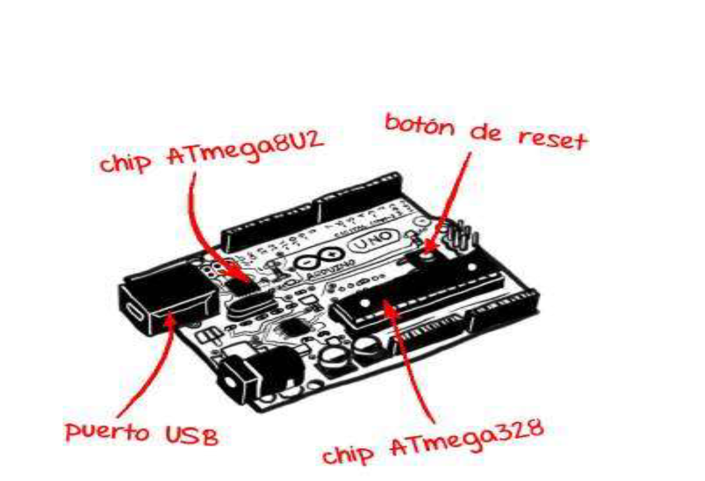2.2.3. E-textiles y Wearables
Tal y como explica Freire (2009), cómo transformar la educación se ha convertido en objeto de intenso debate. Necesitamos transformar las experiencias educativas y el campo de los e-textiles es el más favorable para empezar con dicha transformación.
Bajo el marco de la educación STEM influenciada por la aceptación del valor pedagógico del movimiento maker, se proponen nuevos enfoques que pretendan trabajar el pensamiento artístico creativo y del trabajo basado en actividades productivas dando lugar a las disciplinas STEAM, que incorporan el arte junto con la ciencia, la tecnología, la ingeniería y las matemáticas.
Es en esta disciplina en la que cobra vital importancia los e-textiles, más aún cuando se acepta el valor creativo y tecnológico en las aulas tal y como menciona Guimerans (2017).
Es decir, con los e-textiles involucramos a estudiantes y profesores en la producción creativa, cuestionando así sus observaciones y pensamientos, realizando una reflexión explícita sobre las disciplinas de la artesanía. Con este enfoque educativo, se pretende considerar a todo tipo de audiencias tal y como dice Guimerans (2017), pero particularmente a la femenina.
Según Peppler (2013), gracias a la apertura del campo de los e-textiles en el ámbito educativo ahora podemos adentrarnos en dominios del conocimiento como la electrónica, o la creación de robots, aunque esto no se centra en la parte estética.
Los e-textiles pueden llegar a ser muy beneficiosos en la educación, pues une dos campos que, a priori, no suelen tener mucha relación como son la programación y la moda. Se trata de hacer que los alumnos se interesen en campos que ni en sueños trabajarían, se trata de hacer ver que la programación, la electrónica también pueden ser bonitas y estar a la moda
Hay infinidad de ejemplos de e-textiles, pero nosotros nos vamos a centrar en Body Vis. Body Vis es un proyecto llevado a cabo en la Universidad de Maryland (Washington D.C.) para apoyar las habilidades de investigación científica de los niños, al mismo tiempo que van aprendiendo anatomía y fisiología.

Este prototipo permite ver en tiempo real las acciones que va realizando nuestro cuerpo, vemos como late nuestro corazón o como se mueven nuestros pulmones, a medida que respiramos.
2.2.4. Movimiento maker
El movimiento maker es parte de una subcultura que representa una extensión de la cultura DIY (Hazlo tú mismo) y que promueve la idea de que todo el mundo es capaz de desarrollar cualquier tarea. Se basa en los principios del constructivismo y enfatiza el aprendizaje activo y en red.
Dicho movimiento fomenta nuevas aplicaciones de la tecnología, y permite mezclar formas de trabajo normalmente distintas y separadas.
El movimiento maker tiene tres pilares, uno de ellos es la aparición de herramientas para el diseño y la fabricación tales como la impresora 3D, el cortador laser, el escáner 3D o el software de creación y modelaje en 3D.
El segundo pilar está formado por los medios digitales colaborativos, favoreciendo así la colaboración en la web, aprovechando el código abierto y las nuevas formas de financiación como el crowdfunding.
Por último, tenemos el tercer y casi más importante, el surgimiento de la fábrica para alquiler, es decir, hay que inventar y comercializar en gran cantidad el producto.
Cuando las herramientas se hacen más asequibles y accesibles y la población conoce las habilidades básicas, el movimiento maker se segmenta en distintos tipos de makers.
Podemos encontrar a makers que tienen una inspiración que los lleva a inventar, a makers fabricantes, makers que mediante talleres y haciendo uso de la comunidad digital crean olas de invención y makers que fomentan y apoyan a los principiantes.
El movimiento maker es un movimiento social estimulado principalmente por Arduino y la impresión 3d, que ha permitido la disminución de costes y ha abierto nuevos ámbitos de innovación.
En el ámbito educativo, en el que se pretende pasar de métodos basados en la memorización a otros de resolución creativa y de forma colaborativa el movimiento maker tiene gran influencia, permitiendo incorporar en sistemas formales las CTIM (Ciencia, Tecnología, Ingeniería y Matemáticas).
Las aplicaciones del movimiento maker son muy amplias y gracias a un equipo de científicos aficionados, que elaboran instrumental, se divulga una ciencia ciudadana llegando a aplicaciones en el mundo de la moda, la biología, la comida, el compostaje, los cosméticos, la música y herramientas.
El movimiento maker también tiene espacios y eventos dedicados íntegramente a divulgar su filosofía, en concreto podemos hablar de los makespaces y fablas, que son lugares donde dicho colectivo pone a disposición de todas las herramientas de dicho movimiento. Por otro lado, tenemos las maker faire, que son ferias en las que el colectivo maker muestra y divulga sus proyectos a todo el público interesado, en dichas ferias hay multitud de talleres.
2.2.5. Programación en el entorno escolar
El desarrollo de las primeras computadoras dio ligar a la necesidad de desarrollar lenguajes específicos para comunicarse con sus componentes. Estos lenguajes son los llamados lenguajes máquina. Con la aparición de los circuitos integrados, los lenguajes avanzaron hasta llegar a lenguajes simbólicos independientes de la configuración física de la máquina.
Posteriormente se inicia una etapa basada en el desarrollo de lenguajes universales, naciendo así C y, más tarde en el siglo XXI aparecieron lenguajes como Java o Visual Basic desarrollados para campos específicos.
En el ámbito de la educación BASIC era el primer lenguaje de programación para principiantes, aunque de la mano del MIT surgió más tarde Logo, para hacer más accesible la programación. Mas tarde surgió con fines pedagógicos Pascal, que favorecía la comprensión del código. Finalmente, y fruto de un acuerdo entre el MIT y LEGO se creó un entorno de programación basado en bloques, conocido como Logo Bricks.
Después de varios años y de mano del MIT nuevamente, en 2003 se presentó la primera versión de Scratch, denominado como lenguaje de programación gráfico, basado en Squeak. Microsoft, basándose en la programación por bloques, en 2009 presentó Kodu, permitiendo entre ambas herramientas el acceso a la programación a niños desde los 9 años.
Finalmente podemos mencionar otras herramientas como puede ser AppInventor y Scratch for Arduino(S4A). Ambas derivadas de Scratch y que permiten programar placas microcontroladoras y aplicaciones para dispositivos Android.
El profesor Mitch Resnick, responsable del Lifelong Kindergarten Group del MIT MediaLab, afirmaba que la generación llamada “nativos digitales” era sobre todo una generación de consumidores de tecnología, con mucha familiaridad en la interacción con los medios digitales, pero con escasa capacidad de expresión en estos medios. El mensaje que lanzaba era claro, utilizando un símil con la lectura y escritura: nuestros jóvenes pueden leer, pero no escribir con las TIC.
Con esta idea, surge la necesidad de los jóvenes de poder expresarse mediante un lenguaje de programación.
La programación, viene dando buenos resultados en cuanto a la mejora de calificaciones en pruebas de matemáticas, razonamiento y resolución de problemas, tiene un impacto positivo en la creatividad y la respuesta emocional de niños con problemas de aprendizaje. También se ha demostrado que el alumnado que aprende a programar a edades tempranas tiene menos estereotipos de género en relación con las carreras STEM. (Navarra)
La competencia digital y con las TIC en la educación recogen lo fundamental con el aprendizaje de herramientas de software tales como procesadores de texto u hojas de cálculo, fomentando simples destrezas. Sin embargo, la Comisión Europea dice que hay que fomentar habilidades y diversas actitudes para ser reflexivos con las nuevas tecnologías, es por ello por lo que crea un marco común de referencia.
De forma resumida, las competencias son las siguientes:
Información: identificar, localizar, recuperar, almacenar, organizar y analizar la información digital, evaluando su finalidad y relevancia.
Comunicación: comunicar en entornos digitales, compartir recursos a través de herramientas en línea, conectar y colaborar con otros a través de herramientas digitales, interactuar y participar en comunidades y redes; conciencia intercultural.
Creación de contenido: Crear y editar contenidos nuevos (textos, imágenes, videos…), integrar y reelaborar conocimientos y contenidos previos, realizar producciones artísticas, contenidos multimedia y programación informática, saber aplicar los derechos de propiedad intelectual y las licencias de uso.
Seguridad: protección personal, protección de datos, protección de la identidad digital, uso de seguridad, uso seguro y sostenible.
Resolución de problemas: identificar necesidades y recursos digitales, tomar decisiones a la hora de elegir la herramienta digital apropiada, acorde a la finalidad o necesidad, resolver problemas conceptuales a través de medios digitales, resolver problemas técnicos, uso creativo de la tecnología, actualizar la competencia propia y la de otros.
La programación en la educación podemos decir que tiene como objetivo el entretenimiento y otras funciones como la formación, el aprendizaje, el desarrollo o la estimulación de aspectos intelectuales y psicológicos.
Por una parte, nos encontramos con el pensamiento computacional, ya que empezó siendo un pequeño fenómeno y se está convirtiendo en una parte importante del currículo educativo.
Hablamos de programar un sistema, desde un ordenador, un robot, un microcontrolador hasta un dispositivo móvil, todo ello desde edades cada vez más tempranas. Se está fomentando con mayor frecuencia la idea de pasar de ser usuarios pasivos de la tecnología que únicamente hacen uso de ella, a usuarios activos, desarrolladores de su propia tecnología.
A continuación, vamos a comentar numerosos proyectos que tienen que ver con la aplicación de la programación en la educación.
2.2.5.1. Scratch
Scratch es un programa desarrollado por el grupo “Kindergarten” del MIT. Es una interfaz gráfica con gran herencia de Logo, que permite desde contar historias hasta crear videojuegos, incorporando la interacción con el teclado o el ratón.
Permite a niños a partir de 6 años explorar, experimentar y aprender de forma sencilla e intuitiva a programar. Desarrollando programas con un diseño y planificación inicial, que puede compartirse. Entre sus utilidades podemos mencionar las siguientes:
- Desarrollar el pensamiento computacional
- Desarrollar métodos de resolución de problemas.
- Aprender conceptos matemáticos.
- Aprender fundamentos de programación.
- Usar métodos de distinta índole, gráficos, textos y sonidos.
- Favorecer el aprendizaje colaborativo
Para promover el uso de Scratch en el ámbito educativo, Scratch organiza el llamado Scratch Day, que consiste en un día concreto en el que, en centros educativos a nivel mundial, se realizan actividades con Scratch.

2.2.5.2. Snap
Snap es un lenguaje de programación visual basado en Scratch, con bloques y que sigue la misma filosofía de simplicidad de cara al programador. Fue creado por un grupo del MIT y entre sus novedosas funciones está la de poder crear tus propios bloques y añadirles el comportamiento deseado.
Cabe decir que tiene muchas más funciones que Scratch, como pueden ser los bloques de control de sonido y los arrays multidimensionales.
2.2.5.3. Hora del código
La hora del código consiste en un movimiento global presente en más de 190 países, en el que cualquier persona organiza una hora de programación dirigida a otras personas. Hay disponibles una multitud de tutoriales en más de 30 idiomas, para llevar a cabo dicha actividad y no es necesario tener experiencia previa. Es una introducción a las ciencias computacionales, que pretende demostrar que todo el mundo puede aprender lenguajes de programación.
Dicho movimiento está organizado por Code.Org, que es una organización sin ánimo de lucro dedicada a divulgar las ciencias computacionales.
2.2.5.4. Kodetu
Kodetu es una aplicación diseñada por la unidad Learnign de la Facultad de Ingeniería de la Universidad de Deusto que, mediante el uso de un juego basado en bloques y sentencias, permite controlar el movimiento de un astronauta, siendo el fin llevarlo a la meta.
El fin de dicha aplicación es el aprendizaje del pensamiento computacional.

2.2.5.5. Robótica educativa
La sociedad actualmente está sufriendo muchos cambios, especialmente en el mundo industrial, introduciendo robots que sustituyen el trabajo de los humanos o que los humanos no pueden desarrollar. La globalización junto con el desarrollo tecnológico ha dado lugar a que las tecnologías cada día estén más presentes en nuestras vidas.
En la escuela, todo se transforma como dice Hernando (2015) en base a cuatro pilares.
Estos pilares son los siguientes:
- Primer pilar: Se encarga y refiere a la organización del contenido y metodologías y a su evaluación.
- Segundo pilar: Se encarga de la interrelación que se produce entre profesores y alumnos, es decir enseñanza-aprendizaje.
- Tercer pilar: Se trata de la organización del centro, sus espacios y los materiales.
- Cuarto pilar: Se basa en el uso que le damos a los espacios del centro.
El cuarto pilar, es el más importante desde mi punto de vista, ya que, en función del uso que le damos a estos espacios podemos crear unas actividades más prácticas y divertidas, o en caso contrario sin propuesta de mejora.
Como menciona Fernández & Alcaraz (2016), los cambios en la educación, que pretenden acabar con el estudio memorístico y repeticionista quede atrás, deben de dar lugar a una educación en la que se pretende aprender a aprender. Por tanto, la innovación no consiste en aplicar herramientas novedosas, si no en mejorar el aprendizaje significativo mediante el uso de esas herramientas, como es el caso, con la robótica educativa.
Ahora bien, ¿Qué es la robótica?
Tal y como menciona Matías Romero (2012) en la revista educativa Robótica: Entra al mundo de la inteligencia artificial, la robótica es la ciencia que estudia el diseño y la implementación de robots, mediante la integración de diversas disciplinas como la informática o la mecánica.
La robótica educativa es una nueva forma de integrar las TIC en la educación, como menciona la revista Ingenieros del Futuro (2007) “la robótica educativa es un sistema de enseñanza interdisciplinaria que potencia el desarrollo de habilidades y competencias en los alumnos”. Es una forma de desarrollar contenidos del currículo mediante una práctica con robots, facilitando el trabajo en grupo.
¿Cuándo surge la Robótica Educativa como recurso pedagógico?
Durante el siglo XIX, surgen distintos movimientos que ponen un cambio en el paradigma de la educación pasiva, en la que el centro del aprendizaje era el profesor, no los alumnos (Acaso, 2009). Pero poco a poco surgen dos teorías, que serán la base de la RE. Estas teorías fueron la constructivista de Piaget, 1967 y la de Vygotsky en 1978.
Estas teorías nos dicen que el conocimiento no se transmite solamente, si no que se construye activando esos conocimientos, y que el conocimiento tiene que tener un significado especial para el alumnado, es decir, tiene que ser significativo.
Durante el siglo XX, Papert creó un ambiente de aprendizaje en el que los alumnos durante varios días programaron ordenadores y robots. Haciendo uso de esto los alumnos ganaron conocimientos en tecnología. Según Paper (1991, Baker & Ansorge, 2006) los niños se sentían identificados con los robots.
2.2.5.1. Efectos del uso de la robótica en la educación
Ya han sido varios los autores que han desarrollado e investigado sobre esta temática. La mayoría de las investigaciones afirman que mediante el uso de la robótica los niños entienden mejor los conceptos abstractos y tienen un nivel más funcional del entendimiento (Nourbakhsh, I et al, 2005). También se ha indicado que pueden desarrollar un pensamiento más abierto, de cara a problemas con múltiples soluciones.
Los alumnos, consideran la robótica como juguetes (Mauch, E., 2001), y debido a eso, se sienten más motivados a aprender. Tal y como dice Jacobsen, C & Jadud, M (2005), los alumnos deben divertirse, pasarlo bien explorando el mundo y realizando tareas de una forma constructiva, que es lo que se hace con la RE. Esto es debido a que la RE es una actividad que permite el desarrollo de la teoría constructivista, creando un aprendizaje significativo y partiendo desde el conocimiento que posee el alumno, es decir, es una buena forma de llevar la teoría a la práctica de una forma en la que el alumno se pone en el lugar del robot para así comprender todo de mejor forma.
Volviendo a la mención a Mauch (2001), la motivación del alumnado es un factor muy importante y el uso de esta metodología tiene un impacto positivo tanto en el aprendizaje como en la motivación (Fagin & Merkle, 2003).
Como podemos ver, la mayoría de estos autores coinciden en los beneficios que un correcto uso de la RE puede tener en clase. Cuando los alumnos aprenden a usar ordenadores y softwares específicos, interrelacionan lo que hacen en su vida real con dicha herramienta. Son muchos los expertos que coinciden en que los estudiantes, adquieren mejor los conceptos y competencias que intentamos transmitirles mediante un trabajo en grupo o en parejas. La robótica es la herramienta más apropiada para esto, ya que permite desarrollar habilidades sociales que ayudan a tener una convivencia en sociedad.
Como hemos podido ver a lo largo de este punto, la robótica es un buen método que combinado con el trabajo colaborativo puede ser muy beneficioso, es por todo esto por lo que vamos a mencionar a continuación algunas herramientas educativas basadas en la robótica.
2.2.5.2. Zowi
Brevemente, Zowi es un robot bípedo derivado de Bob, bajo licencia CC BY-SA, por lo cual, aunque es un producto comercial, está desarrollado bajo una licencia CC y tanto su electrónica como diseño está compartida en un repositorio. Cabe decir que ha sido elegido como el mejor juguete conectado de 2016.
Zowi ha nacido gracias a la explosión en el aula de la programación y la robótica ya que es un robot con un propósito meramente educativo.
Zowi, podemos decir que se convierte en una mascota, ya que lo cogen, lo miran, lo tocan e interactúan con él. Debido a su tamaño, es un robot cómodo y con acabados excepcionales, pero con aparente fragilidad después de numerosas caídas.
Zowi requiere de una App basada en Android para interactuar con el entorno, aunque incorpora una botonera para así poder funcionar sin necesidad de la App, pudiendo elegir entre sus distintos modos, que incorporan funciones de baile y detección de obstáculos entre otros.
Zowi es un robot basado en una licencia Creative Commons por lo que la comunidad, sigue haciéndole mejoras y personalizaciones, todo esto junto con que puede ser comandado por Arduino, da lugar a una experiencia muy enriquecedora en el aula con su uso.
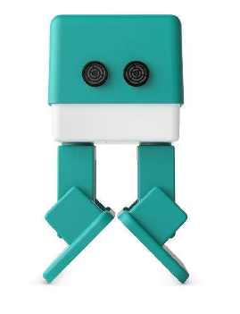2.2.5.3. Otto
Otto es un robot interactivo que puedes hacer bailar, fabricar sonidos, o evitar obstáculos, cabe decir que es completamente open source y se puede construir en no más de dos horas.
Otto es compatible con Arduino y sus piezas pueden ser impresas en 3D y, está indicado para enseñar robótica y programación a los niños.
A simple vista, se puede apreciar que es una obra derivada entre Zowi y Bob, el antecesor de Zowi.
Este robot cuenta con distintas versiones, desde la más básica hasta una versión plus que puede manejarse con bluetooth desde una aplicación.
Entre sus ventajas tenemos la de que es totalmente open source, y que tiene una gran comunidad por detrás que lo mejora continuamente y lo documenta, llegando a tener un manual de usuario muy bien detallado.
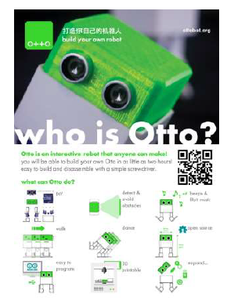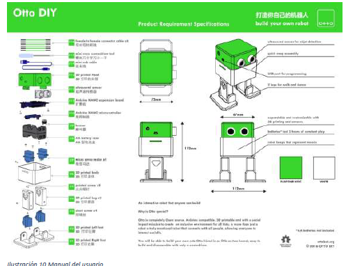2.2.5.4. Kibo
Kibo es un robot el cual puede ser programado con sencillas tareas mediante el uso de boques de madera con códigos de barra sobre ellos. Al ser de madera, los niños le prestan completamente la atención al robot, no a ninguna aplicación externa.
Este robot ha sido diseñado por la Universidad de Tufts en Boston.
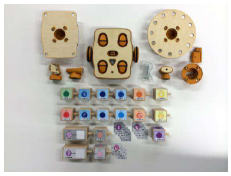2.2.5.5. Escornabot
Escornabot es un proyecto de código/ hardware abierto cuyo objetivo fundamental es acercar la robótica y la programación a niños y niñas.
Hay varios modelos, el básico puede programarse con los botones para ejecutar secuencias de movimiento, a partir de esto, todo lo imaginable es posible.
Entre sus características podemos mencionar las siguientes:
Es un proyecto de open hardware y software abierto, que significa que es abierto a toda la comunidad y a cualquiera que pueda aportar algún grano de arena al proyecto.
Su nombre procede de la unión de la palabra robot y escornaboi, una especie de escarabajo.

Su funcionamiento consiste en la ejecución de unos movimientos que son programados mediante el uso de una botonera que incorpora, aunque entre sus distintas versiones podemos contar con una que permite manejar el robot mediante una aplicación.
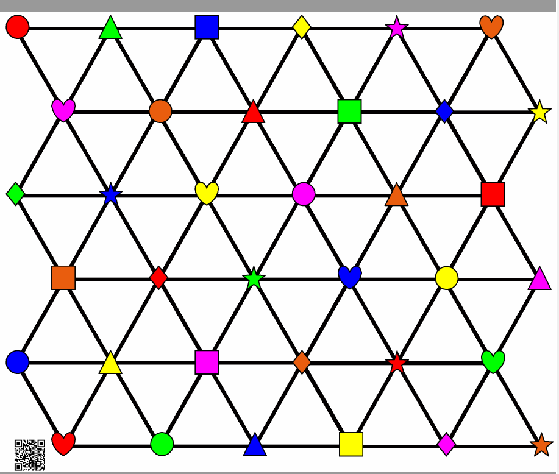El proyecto es español y está muy documentado, siendo accesible tanto la información de montaje como las múltiples actividades que la comunidad va creando, basadas la mayoría de ellas en un tablero.
En el segundo semestre del año 2017 la comunidad de impresión 3D CloneWars lanzó un reto a sus miembros para promover la creación de las partes imprimibles del robot, siendo donados a escuelas públicas. Por otro lado, el usuario @pablorubma en Twitter ha creado la iniciativa “#PonUnEscornabotEnTuVida” con la que pretende hacer llegar la robótica a cualquier persona, donando más de 40 kits de piezasn la salida de 2017 y documentando el proyecto en su repositorio. 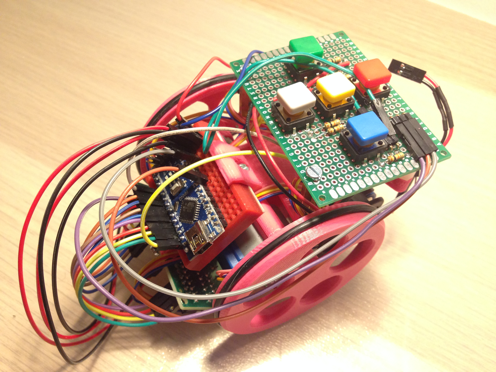2.2.5.6. Makeblock mBot
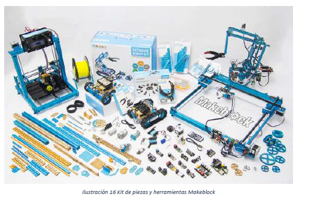Makeblock es una empresa orientada en la generación de kits de construcción, especialmente de impresoras 3D, maquinas CNC y robots educativos.
Makeblock es accesible a pequeños y adultos, sin necesidad de tener conocimientos previos en programación o electrónica.
Sus kits de robótica son los siguientes:
Makeblock es compatible con Arduino, aunque sus sensores se conectan con sensores RJ45 para hacerlo más fácil. Y, además es un proyecto de hardware open source que incluye conexiones encillas, es programable con Scratch y compatible con Lego.
2.2.5.7. Lego Mindstorms
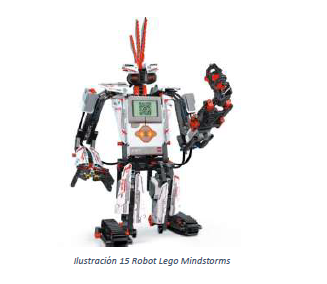Lego Mindstorms es una línea de juguetes de robótica para niños fabricado por la empresa LEGO, que posee elementos básicos de la teoría robótica, como la unión de piezas y la programación de acciones en forma interactiva. (Wikipedia, s.f.)
Se vende como una herramienta educacional, inicialmente creada por LEGO y el MIT, y puede ser usado para crear modelos de piezas electromecánicas.
2.2.6. Realidad Virtual/ Realidad Aumentada en educación y recursos móviles
Como ya hemos mencionado anteriormente son numerosos los avances tecnológicos de las últimas décadas. Pasando de la impresión 3D hasta los cursos en línea (MOOCs), llegando a la implementación de la realidad virtual, que favorece estudiar con un menor esfuerzo, al basarse en una experiencia.
Azuma (1997) define la RA como la tecnología que permite que coexistan en el mismo espacio lo real y lo virtual, dando la posibilidad de interactuar con estos elementos en tiempo real.
La experiencia de la RV no está basada solo en juegos, si no en experiencias educativas como poder pasear por las pirámides, o poder aplicarla a otros conceptos educativos.
Estela González, especialista de la cooperativa Eduxarxa, especialista en innovación educativa, destaca la capacidad de la RV para romper con las barreras del aula. De cara al futuro, el reto es crear contenido. (Periódico, s.f.)
En educación la RA es uno de los avances tecnológicos transformadores de gran impacto, permite la creación de contenidos que podemos mostrar a los alumnos, presentando características de interactividad y tridimensionalidad. Mediante su uso percibimos mejoras en el proceso de enseñanza aprendizaje y las competencias tecnológicas tanto de alumnos como de docentes (Badia, Chumpitaz, Vargas, y Suárez, 2016).
Autores de diferentes ámbitos y disciplinas muestran cómo puede usarse la RA, aplicada a diferentes estudios puede utilizarse en medicina, diseño, entretenimiento, turismo, juegos en red (con el impacto global de Pokémon Go) y en educación. Huang, Li y Fong, (2015) presentan diferentes formas para usar la RA, desde la enseñanza de arte en infantil, que recoge múltiples experiencias a nivel mundial y muestra la interacción de los alumnos con la RA en las distintas etapas de la educación, a su uso en distintas materias: lengua, biología, idiomas extranjeros… en todo el currículo en algunos casos, que presenta materiales con los que pueden interactuar los alumnos, observarlos en tres dimensiones e incluso en algunos casos ver animaciones, elementos importantes para entender mejor los contenidos curriculares aspecto que los dota de un indudable valor pedagógico.
Otra de las herramientas usadas son los códigos QR (quick response), que consiste en una imagen bidimensional capaz de cifrar información a la que el usuario puede acceder a través del móvil.
Como menciona Sánchez Rodríguez, Ruiz Palmero, & Gómez García (2016), es muy interesante pensar en aplicaciones educativas haciendo uso de estos códigos ya que mediante ellos podemos crear trjetas que recreen objtos, podemos enriquecer textos con imaenes o contenido extra, o todo lo que tenemos al alcance de la imaginación y de las posibilidades.
Por otro lado, podemos mencionar el uso de la geolocalización, que es un sistema usado para representar información interpretable por una máquina a partir de la posición que se ocupa y de la orientación en que se dispone.
En la educación la geolocalización tiene muchas posibilidades, en España un ejemplo educativo es el Callejero del Folclore Aragonés.
Los sistemas didácticos móviles en países de habla hispana son metodologías innovadoras. De todas ellas podemos destacar:
2.2.7. TIC y alumnos con NEE (Necesidades educativas específicas)
Las TIC son uno de los recursos de apoyo usados en el aprendizaje de distintas materias, así como para facilitar la integración de alumnos con necesidades educativas específicas, ya que contribuyen a facilitar el proceso de enseñanza-aprendizaje de los alumnos en general y puede llegar a ser imprescindible en el caso de las NEE.
Tal y como menciona (Sánchez Rodríguez, Ruiz Palmero, & Gómez García, 2016), la utilización de las TIC en alumnos con NEE se debe a los siguientes motivos:
- Posibilidad de superar un déficit específico.
- Abrir modelos y posibilidades de comunicación del sujeto y su entorno.
- Favorecen la autonomía de los sujetos.
- Favorecen la comunicación síncrona y asíncrona de los sujetos con el resto de los compañeros y profesorado.
- Propician una formación individualizada.
- Facilitan la inserción sociolaboral.
- Proporcionan momentos de ocio.
- Favorecen la disminución del sentido de fracaso académico y personal.
Las TIC, en general tienen unas determinadas posibilidades y aspectos en la enseñanza, pero que en alumnos con NEE tienen mucha más relevancia:
Hay que tener en cuenta algunos aspectos a la hora del uso de las TIC en alumnos con NEE ya que depende en primer lugar de la discapacidad y del grado en el que se presente. Por otro lado, su utilización debe de percibirse tanto desde el punto de vista hardware tanto software. Por último, existe la posibilidad de adaptar medios convencionales para la construcción de específicos.
El proceso de implementación de las TIC en sujetos con NEE es complejo ya que en primer lugar debemos de evaluar la accesibilidad y las competencias digitales o de interacción con las TIC para posteriormente reflexionar sobre la idoneidad de uso de las herramientas y así elegir el hardware y software apropiado. La implementación no se basa solo en las herramientas ya que el centro debe de tener unas instalaciones accesibles y un entorno de trabajo adecuado en el que se pueda poner en práctica nuevos modos de aprendizaje.
Debido al alto numero de tecnologías existentes Sánchez Rodríguez, Ruiz Palmero, & Gómez García (2016) proponen una clasificación de las TIC de la siguiente forma:
- Atendiendo a su nivel tecnológico.
- No tecnología.
- Baja tecnología.
- Media tecnología.
- Alta tecnología.
- Atendiendo a las características de los usuarios.
- Equipos y productos para discapacidad física.
- Equipos y productos para discapacidad psicocognitiva.
- Equipos y productos para discapacidad sensorial.
- Equipos y productos para personas con discapacidad y mayores.
- Atendiendo a la lógica de operación.
- Ayudas alternativas.
- Ayudas aumentativas.
- Ayudas sustitutivas.
2.2.7.1. TIC y discapacidad visual
La tiflotecnología es la adaptación y accesibilidad de las TIC para su utilización y aprovechamiento por parte de personas con ceguera o discapacidad visual.
Es en esta deficiencia donde encontramos más material elaborado o adaptado y donde más se ha impulsado el uso de las TIC.
Podemos mencionar el uso de las máquinas Perkins, o las lectoras Kurzweil, pero el número de tecnologías es amplio y, las ventajas de sus usos son mayores aún.
Entre sus ventajas podemos nombrar
Por otro lado, dentro de este tipo de herramientas podemos mencionar el robot Escornabot, mencionado anteriormente en este trabajo de investigación, ya que tanto su botonera como las actividades que se realizan con él, pueden adaptarse a las personas con ceguera, siendo así una herramienta muy útil en la enseñanza de niños con discapacidad visual. Por otro lado, mediante la impresión 3D podemos crear herramientas adaptadas a dicha discapacidad, como laminas con relieve entre otros.
Normalmente los equipos usados por estos sujetos con similares a los que usan los sujetos sin esa deficiencia, con la salvedad de necesitar alguna adaptación. Pero en ocasiones tanto el hardware como el software puede ser adaptado a las necesidades de cada usuario.
Cuando hablamos del hardware no podemos olvidarnos de los dispositivos con celdillas, que traducen a lenguaje braille la información de la pantalla, o los teclados de funciones.
También podemos mencionar los sintetizadores de voz que permiten al usuario sin ver la pantalla, saber lo que hay en ella.
2.2.7.2. TIC y discapacidad auditiva
Cuando hablamos de discapacidad auditiva, los recursos con los que nos encontramos podemos catalogarlos como dispositivos que amplían el volumen para superar la hipoacusia, o los que facilitan la traslación del sonido a texto.
Son múltiples los equipos de frecuencia modulada que podemos usar, y que podemos distinguir en:
2.2.7.3. TIC y discapacidad motriz
En el caso en el que los alumnos tienen una discapacidad motora, el ordenador es la ayuda fundamental que contribuye a la comunicación, el lenguaje y el acceso a la información entre otros. Muchos de estos alumnos pueden presentar dificultades en los sistemas de introducción de información al ordenador, es decir, problemas con el ratón y el teclado.
Entre las adaptaciones que se suelen realizar están las modificaciones de las opciones del teclado y el ratón. Esto se hace mediante programas específicos, o mediante las propias configuraciones del sistema.
Además de estas adaptaciones, también nos encontramos con teclados especiales adecuados a las necesidades de cada alumno. Teclados amplios, teclados para una sola mano, teclados de conceptos, virtuales y reducidos.
En los ratones tradicionales encontramos adaptaciones, como los ratones magnificados, emuladores de ratones, ratones ergonómicos, de boca, de barbilla, etc.
2.2.7.4. TIC y discapacidad cognitiva
Tal y como menciona Sánchez Rodríguez, Ruiz Palmero, & Gómez García (2016) estos alumnos presentan numerosas barreras:
Teniendo en cuenta lo mencionado anteriormente, en la mayoría de las ocasiones con la presencia de un asistente se reduce la dificultad que presentan.
Dentro del hardware diseñado para dicha discapacidad nos podemos encontrar con Reconocedores de voz, teclados de conceptos o pantallas táctiles.
En cuanto al software, nos encontramos con procesadores de texto adaptados, herramientas de autor como JClic, programas de diseño gráfico y programas de ejercitación.
2.2.8. Otros proyectos
2.2.8.1. PCBPrints
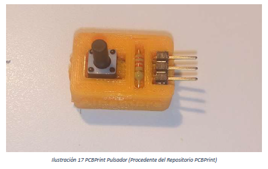El proyecto PCBPrints tal y como se define en el propio repositorio creado para la causa, es un conjunto de piezas imprimibles que permiten crear circuitos sencillos o pequeños módulos, en los que soldar los componentes.
El proyecto es una idea de @Obijuan, que fue quien creo el primer diseño, aunque posteriormente la comunidad maker ha ido mejorando los diseños y añadiendo más. Cabe decir que el termino PCBPrint fue acuñado por @movilujo y que parte de los diseños han sido creados por @javacasm.
Los diseños son muy variados, desde PCBPrints con diodos LED, hasta formados por pulsadores.
Nosotros al realizar nuestra investigación hemos visto esta herramienta muy favorable de cara a su uso en educación primaria y secundaria, ya que dichas PCBPrints permiten realizar conexiones rápidas con Arduino, sin necesidad de que los alumnos tengan que realizar el prototipado en una Protoboard.
2.2.8.2. Herramientas propias creadas
2.2.8.2.1 Shield para Arduino Lacreducativa 1.0
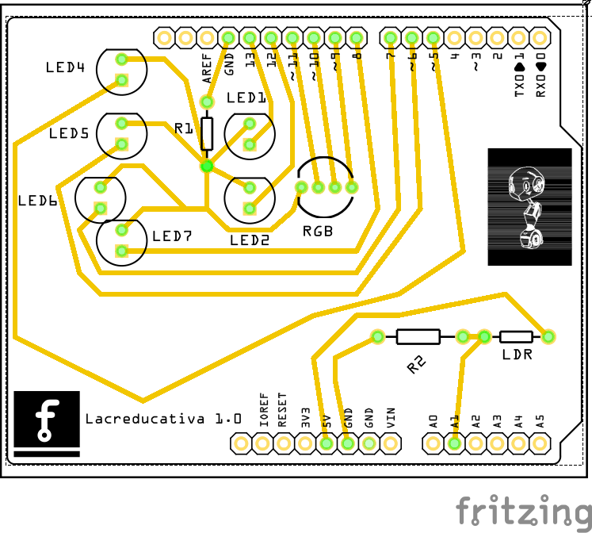Hemos diseñado un Shield para Arduino, llamado “Lacreducativa 1.0” que está formado por seis diodos LED de los cuales dos van conectados a salidas analógicas PWM, para así poder configurar el pulso de salida, y controlar la luminosidad de dichos diodos.
Por otro lado, contamos con un LED RGB, que puede ser usados en asignaturas relacionadas con el arte, para explicar así la teoría del color luz.
Por último, contamos con una resistencia LDR que nos sirve para medir un valor analógico, en concreto, la cantidad de luz exterior.
Para hacer el shield más atractivo y a la vez hacer más segura la manipulación hemos creado una carcasa a medida para introducir el shield junto a la placa Arduino Uno a la que va conectado. Dicha carcasa dispone de los orificios necesarios para poder cargar programas y mantener alimentada la placa, así como los necesarios para dejar a la vista los diodos y la resistencia LDR.
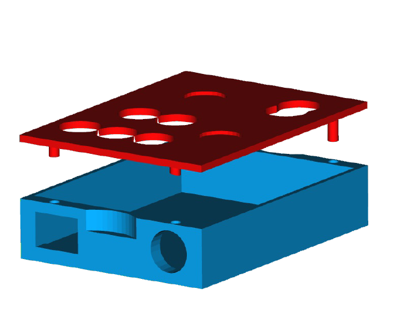Con dicho shield se pueden elaborar distintas actividades enfocadas en función del currículo de las asignaturas de primaria y secundaria. Las actividades planificadas con nuestro shield pueden verse en el anexo.
2.2.8.2.2 PCBPrints diseñadas para nuestro proyecto
En primer lugar, hemos mejorado la PCBPrint LDR, que consiste en el diseño en 3D de una pieza que albergará los componentes para crear un circuito divisor de tensión, con el que podemos medir el valor analógico que la resistencia dependiente de la luz nos dé.
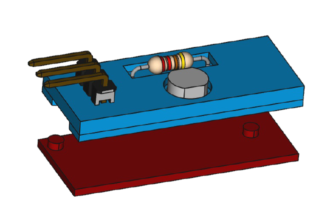 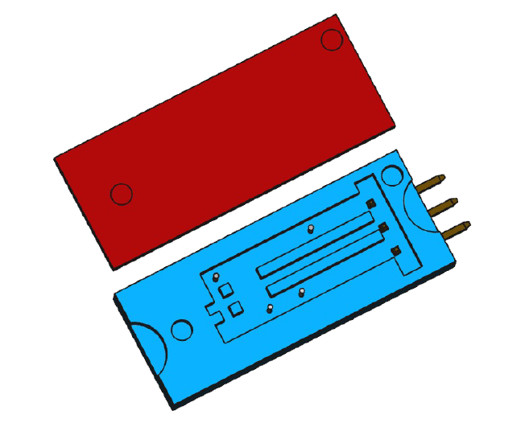Este es el segundo PCBPrint de diseño propio, y como se puede apreciar por el nombre, consiste en una pieza diseñada con un buzzer, que nos puede ser de gran utilidad a la hora de crear distintos tipos de sonidos para múltiples asignaturas
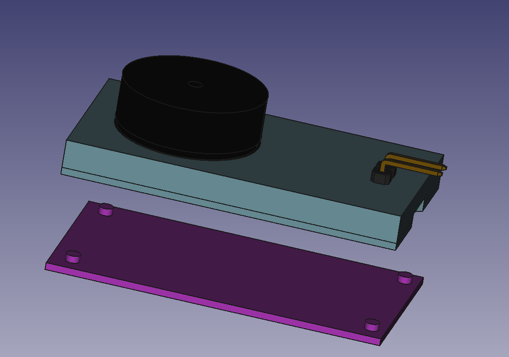Este diseño consiste en una carcasa que hace que sea más fácil manipular el sensor de proximidad. Está formado por varias partes y, permite que el sensor se mantenga firme y estable en su posición
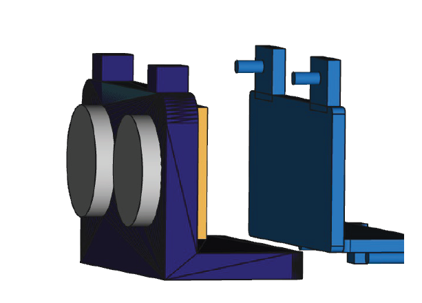2.2.8.2.3. Flor con servo
Esta creación consiste en una caja, que aloja una placa Arduino Nano, un servomotor y dos resistencias LDR. Por otro lado, tenemos una flor, impresa en 3D que se aloja en el servomotor. El funcionamiento de esta creación está orientado a las ciencias naturales, física y asignaturas tecnológicas.
Surge de la necesidad de poder explicar el comportamiento de la foto estímulos de las plantas de una forma más estructurada y entendible por los niños.
Las resistencias LDR captaran los valores de luz a izquierda y derecha de la planta, al incidir una cantidad mayor de luz en uno de los lados, la flor se gira hacia ese lado. En caso de haber algún cambio, gira hacia el lado en el que hay aparentemente más luz.
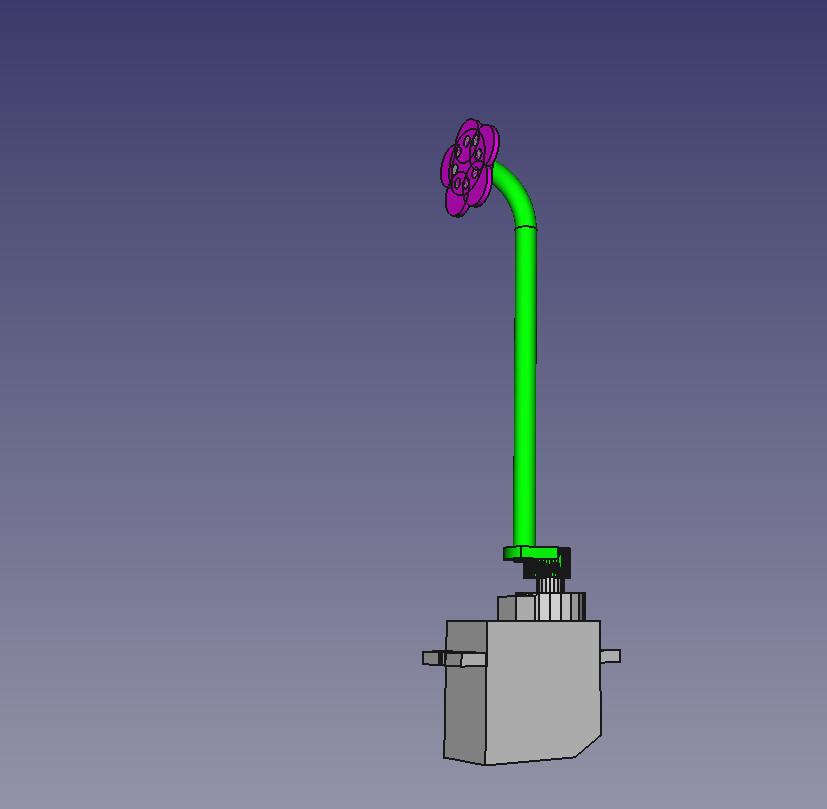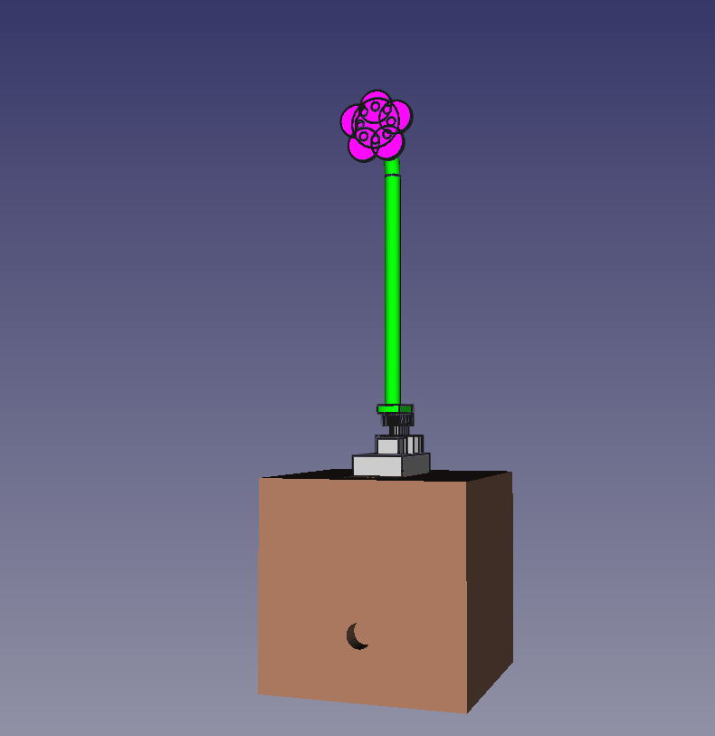
2.2.8.2.4. Piano Shield
Dicha herramienta consiste en un piano formado por siete pulsadores que van conectados a Arduino permitiendo interpretar dicha señal y emitir la nota deseada.
El circuito de dicho “piano” está basado en las PCBPrints y usa también partes impresas en 3D.
El uso específico de dicha herramienta está orientado a educación musical, tecnología e informática, aunque siempre se puede adaptar a distintas materias.
2.2.9. Competencias y aprendizaje
Al conocer las tecnologías el usuario final puede sacar partido de ellas, sin embargo, se debe profundizar más. Al comprender los conceptos básicos, se puede ir profundizando poco a poco hasta alcanzar ciertos objetivos. Estos objetivos están expresados en forma de competencias claves, tal y como indica el marco legislativo actual, y deben de ser trabajados de forma transversal en la educación primaria.
Con estas tecnologías conseguimos un aprendizaje significativo y novedoso alcanzando los contenidos de múltiples asignaturas entorno a las competencias de esta.
Las competencias más desarrolladas con estas herramientas son las siguientes:
Para lograr la correcta aplicación y realización de los objetivos el alumno tiene que ser el centro de atención, se debe de seguir una metodología por indagación mediante la que los alumnos busquen la solución a diversos problemas mediante la constancia, búsqueda de documentación, el trabajo cooperativo y el pensamiento crítico.
2.3. Definición de Términos básicos
Aprendizaje: El aprendizaje es el proceso mediante el cual se modifican y adquieren habilidades, destrezas, conocimientos, conductas o valores como resultado del estudio, la experiencia, la instrucción, el razonamiento y la observación.
Aprendizaje colaborativo: El aprendizaje colaborativo permite que los alumnos intercambien opiniones, experiencias, ideas y conocimientos unos con otros. Este tipo de aprendizaje fue desarrollado por Johnson and Johnson durante el siglo XX. Es un método mediante el cual los alumnos trabajan juntos para debatir sobre un tema, crear un proyecto y resolver problemas entre otras actividades posibles. Mediante el aprendizaje colaborativo, se da el concepto de interdependencia colaborativa, que es un mecanismo que logra la colaboración entre grupos.
Conocimiento: El conocimiento suele entenderse como el conjunto de hechos o información adquirida por una persona a través de la experiencia, la educación o la práctica de un asunto. También es lo que se adquiere como contenido intelectual relativo a un campo determinado.
Por otro lado, podemos decir que es la conciencia o familiaridad adquirida por la experiencia de un hecho o situación.
Educación: La educación es el proceso de facilitar el aprendizaje o la adquisición de conocimientos, habilidades, valores, creencia y hábitos de un grupo de personas que los transfieren a otras, a través de la narración, la discusión, la enseñanza, la formación o la investigación.
Enseñanza: La enseñanza es una actividad realizada conjuntamente mediante la interacción de elementos: uno o varios profesores, uno o varios alumnos y, el entorno educativo o mundo educativo donde se ponen en contacto ambos.
La enseñanza es el proceso de trasmisión de una serie de conocimientos, técnicas, normas o habilidades. Está basado en diversos métodos y cuenta con el apoyo de instituciones.
/Nuevas tecnologías: Las nuevas tecnologías hacen referencia a los últimos desarrollos tecnológicos y sus aplicaciones.
Las nuevas tecnologías se centran en los procesos de comunicación y las podemos agrupar en tres áreas: informática, video y telecomunicación y desarrollo de más de un área.
Programación: La programación, conocida como programación informática o algorítmica es el proceso de diseñar, codificar, y depurar un código fuente. El propósito de la programación es crear programas que realicen un comportamiento deseado.
Robótica educativa: Es un medio de aprendizaje en el cual participan las personas que tienen motivaciones por el diseño y construcción de creaciones propias.
2.4. Hipótesis
El uso de las nuevas tecnologías, ya sean open source o no, ocasiona una variación del aprendizaje en las distintas etapas de la educación formal.
La robótica educativa, ya sea aplicada de forma trasversal o de forma directa, incide en el aprendizaje de las matemáticas y la orientación espacial.
La ausencia de herramientas educativas en el aula, pero existentes fuera de la misma, perjudica directamente las explicaciones.
La explicación con herramientas educativas acorde con las existentes en el mercado permite conocer de mejor forma el mundo que nos rodea, y los avances actuales de forma contextualizada y actualizada.
La percepción y entendimiento de las materias está provocado por la incidencia de las herramientas usadas en su explicación.
La electrónica educativa incide en los procesos creativos e imaginativos de los niños permitiendo desarrollar la creatividad y fomentando inquietudes positivas de cara al aprendizaje.
El miedo de los profesores a usar estas herramientas incide en el desuso de dichas herramientas.
2.5. Variables
Las variables que pretendemos analizar son numerosas, pero podemos mencionar la más importante de ellas, el aprendizaje.
El aprendizaje es una de las variables dependientes que pretendemos analizar con más profundidad, ya que al usar las herramientas educativas (variable independiente), pensamos que puede varias de forma positiva.
Al analizar el aprendizaje también desglosaremos más variables como pueden ser el nivel socioeconómico de las personas analizadas, el nivel cultural, la zona de residencia, el tipo de vivienda, el rendimiento académico, la conducta y actitud que ha mostrado durante la realización de las practicas con las herramientas.
Por lo tanto, algunas de las variables a analizar son la siguientes:
| Variable | Dimensión | Indicador | Nivel |
| Situación socioeconómica | Nivel social | Nivel Cultural | Ordinal |
| Situación socioeconómica | Nivel Económico | Tipo de vivienda | Nominal |
| Situación socioeconómica | Zona de residencia | Nominal | |
| Rendimiento | Calificaciones | Razón | |
| Conducta | Actitud en la actividad | Nominal | |
| Cognitiva | Juicios acerca de las herramientas Creencias sobre las herramientas | ||
| Actitud frente a las actividades con las herramientas educativas | Afectiva | Sentimientos acerca de las herramientas y sentimientos que ofrecen | |
| Actitud frente a las actividades con las herramientas educativas | Conductal | Intenciones hacia el objeto Tendencias que generan |